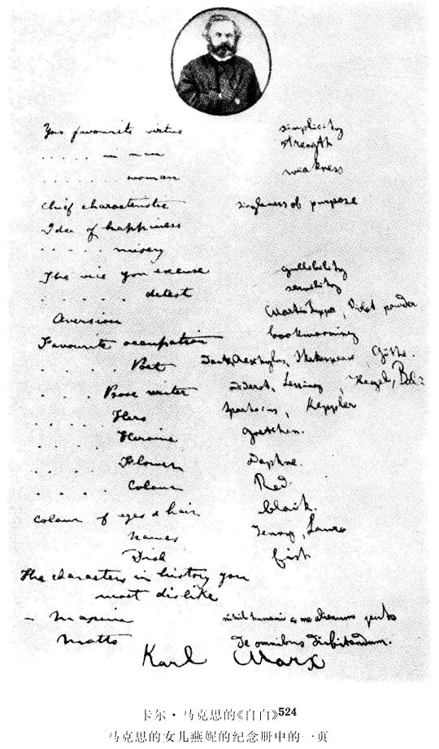

书信。1864年10月-1867年
附录3.卡尔·马克思。自白
1865年4月1日于扎耳特博默耳
您喜爱的优点：
一般人………………纯朴。
男人…………………刚强。
女人…………………柔弱。
您的特点：………………目标始终如一。
您喜欢做的事：…………看小尼达FN1。
您厌恶的缺点：…………逢迎。
您能原谅的缺点：………轻信。
您对幸福的理解：………斗争。
您对不幸的理解：………屈服。
您厌恶的是：……………马丁·塔波尔。
您喜爱的英雄：…………斯巴达克、刻卜勒。
您喜爱的女英雄：………甘泪卿FN2。
您喜爱的诗人：…………埃斯库罗斯、莎士比亚、歌德。
您喜爱的散文家：………狄德罗。
您喜爱的花：……………瑞香。
您喜爱的菜：……………鱼。
您喜爱的格言：…………Nihil humani a me alienum puto〔人所具有的我都具有〕。
您喜爱的箴言：…………De omnibus dubitandum〔怀疑一切〕。524
卡尔·马克思

脚 注
FN1 南尼达·菲力浦斯。——编者注
FN2 歌德的悲剧《浮士德》中的人物。——编者注
注 释
523 马克思的这篇同莱昂·菲力浦斯和南尼达·菲力浦斯的信一起发表在1956年《社会历史国际评论》上的《自白》和它的另外两个文本稍有出入。这两个文本，一个是在马克思的女儿燕妮的纪念册中保存下来的手抄稿，本卷发表的照片就是这个手抄稿的真迹复制品;另一个是劳拉·马克思的手抄稿（见《回忆马克思恩格斯》人民出版社1957年版第304-305页）。―第588页。
524 下面是在马克思的长女燕妮的纪念册中保存下来的马克思的《自白》的一种文本（见注523）的译文：
| 您喜爱的优点： 一般人…………………………纯朴。 男人……………………………刚强。 女人……………………………柔弱。 您的特点：…………………………目标始终如一。 您对幸福的理解：…………………（没有答案）。 您对不幸的理解：…………………（没有答案）。 您能原谅的缺点：…………………轻信。 您厌恶的缺点：……………………逢迎。 您讨厌的：…………………………马丁·塔波尔、堇菜粉。 您喜欢做的事：……………………啃书本。 您喜爱的诗人：……………………但丁、埃斯库罗斯、莎士比亚、歌德。 您喜爱的散文家：…………………狄德罗、莱辛、黑格尔、巴尔扎克。 您喜爱的英雄：……………………斯巴达克、刻卜勒。 您喜爱的女英雄：…………………甘泪卿。 您喜爱的花：………………………瑞香。 您喜爱的颜色：……………………红色。 您喜爱的眼睛和头发的颜色：……黑色。 您喜爱的名字：……………………燕妮、劳拉。 您喜爱的菜：………………………鱼。 您厌恶的历史人物：………………（没有答案）。 您喜爱的格言：……………………人所具有的我都具有。 您喜爱的座右铭：…………………怀疑一切。 |